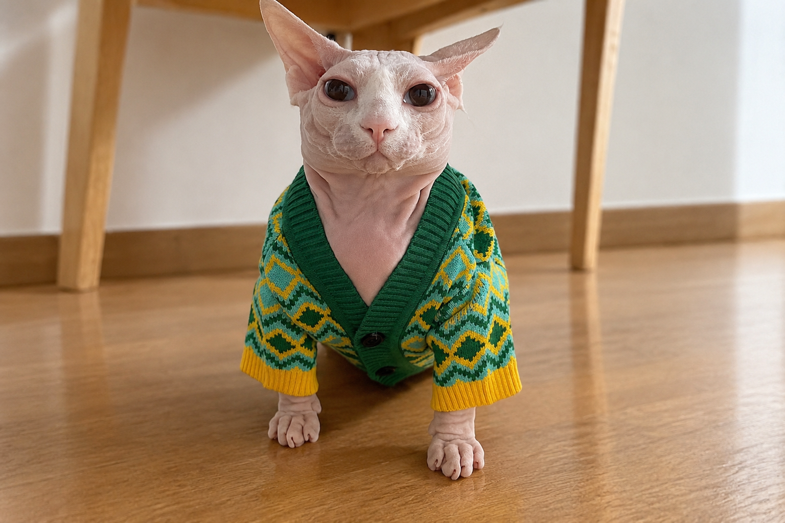

O cuidado do seu pet começa com uma boa organização.
A VetAgenda é um sistema desenvolvido para facilitar o gerenciamento de agendamentos veterinários, tornando a rotina de atendimento mais prática e organizada.
Conheça nossas funcionalidades
Mais praticidade para cuidar de quem importa.
Organizar consultas veterinárias pode ser mais simples. Com a VetAgenda, é possível registrar tutores, cadastrar seus pets, consultar veterinários e organizar os horários dos atendimentos em um único sistema.
Conheça nossas funcionalidades
Cadastro de tutores
Registre os dados dos responsáveis pelos animais e mantenha suas informações organizadas.
Cadastro de pets
Armazene informações importantes dos animais, como nome, espécie, raça e data de nascimento.
Cadastro de veterinários
Organize os dados dos profissionais, suas especialidades e disponibilidade.
Agendamentos
Organize consultas, horários, responsáveis e veterinários de cada atendimento.
Seu pet merece cuidado. Sua rotina merece facilidade!
Conte com a VetAgenda para tornar a organização dos atendimentos veterinários mais simples.